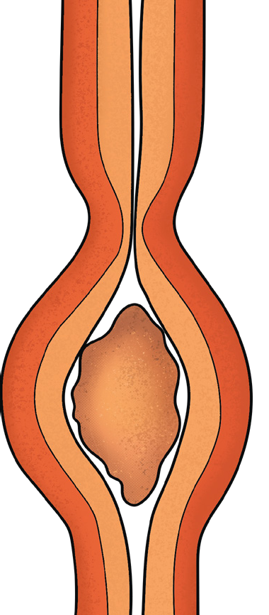

38
Student’s Book - Form Two

Think
The animal body without the digestive system
Structure of the digestive system
Task 2.1
Search the library and internet sources for information about the human digestive system and write short notes.
The human digestive system is composed of the alimentary canal, associated organs, and glands as shown in Figure 2.1. The main parts of the alimentary canal are the mouth, pharynx, oesophagus, stomach, small intestine and large intestine. The small intestine comprises the duodenum and ileum, whereas the large intestine comprises the colon, rectum and anal canal. The associated organs include the tongue, liver, pancreas, gall bladder and appendix. The digestive system also contains the salivary glands.
Digestive system
Introduction
Food taken into the body cannot be utilised by the cells unless it is broken down and changed into simpler, soluble, and diffusible form. Digestion takes place in the alimentary canal. In this chapter, you will learn about nutrition in human and ruminants including their digestive systems and digestion processes. The competences developed will enable you to practise a proper eating habit to avoid disorders and diseases associated with the digestive system.
Chapter Two
08/04/2026 10:18:13